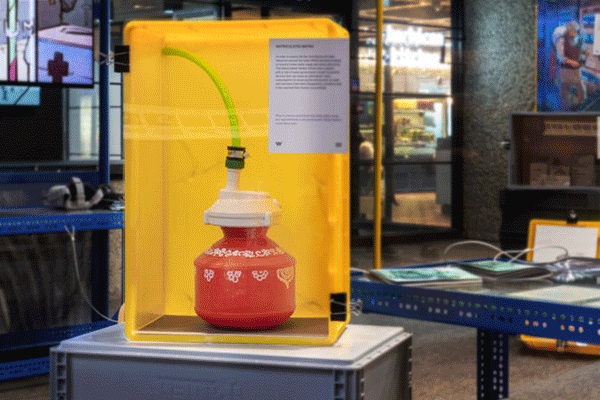
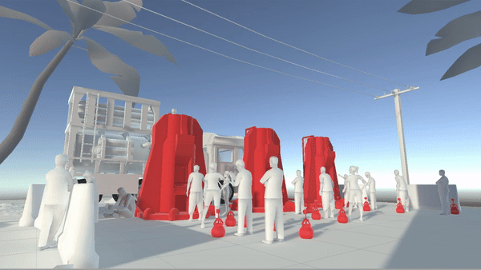

1 | Tangible possibilities
Artifacts were created for each key character: packaged foods informed by local diets for the FED farmer, nanobotic diagnosis pills and a medicines for the frontline health worker, a DIY water-purifying kit for the Hydrosystem technician and a tele-medicine and water quality testing kit for the WHEL activist. Each area in the space was dedicated to its own persona and was presented with a description and an accompanying question:How might urgent medical care be provided remotely to the thousands affected by a natural disaster? How might local support networks empower communities with the necessary skills for crisis response? How might humanitarian mechanisms provide opportunities for meaningful employment during a process of recovery?
2 | Storytelling in VR
The use of VR was an interesting production and creative challenge. It was perfect to bring together the story of our humanitarian workers but the immersiveness of it made production very demanding. The story in the VR experience was told from the perspective of an investigator trying to ensure the quality of service delivery while on the lookout for any signs of corruption or malpractice. Each scene was like a page taken out of the detective's notebook with annotations and "3D captures" of aid delivery sites. During the research we were inspired by Forensic Architecture's work and their multi-media evidence gathering process. Another source of inspiration was The Industry, an interactive platform retelling the designer drug scene in Amsterdam.My role was to guide the production and narrative design of the experience by coordinating with Alap Parikh (programming lead) and Yuvraj Jha (visdev lead).


